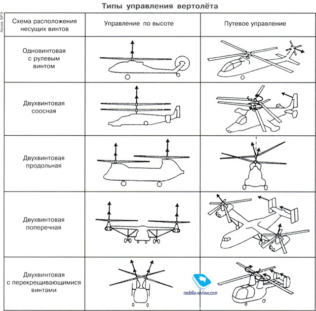
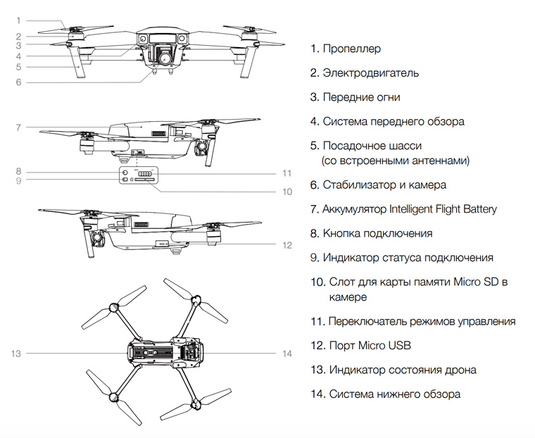

Mavic Air 2 - найрозумніший, безпечний і легкий в зверненні споживчий безпілотник на сьогоднішній день.
DJI, світовий лідер в області цивільних безпілотних літальних апаратів і технологій аерофотозйомки, сьогодні відкриває нову еру творчості з Mavic Air 2, що поєднує в собі високоякісну візуалізацію, інтуїтивно зрозумілі і в той же час вчинені польотні характеристики, а також революційні інтелектуальні та безпечні технології в кращому вигляді. Універсальний дрон, який ми коли-небудь робили
Створений для того, щоб робити унікальний, високоякісний контент з повітря простим, веселим і безпечним, Mavic Air 2 пропонує флагманські можливості в компактному і простому у використанні доладному квадрокоптера з функціональністю матриці 8K. Великий сенсор 1/2 "дає можливість робити фотографії і відео з високою роздільною здатністю, щоб виділити контент, а розширені запрограмовані режими, інтелектуальні функції і технології обробки зображень роблять захоплення професійно виглядає контенту легким. Тепер пілоти можуть довше залишатися в небі з поліпшеним максимальним часом польоту, знімати яскраві кадри з повністю оновленими автономними можливостями і повністю перетворювати свій контент за допомогою функцій редагування в самому додатку.
«Mavic Air 2 - ще одна віха для DJI, що демонструє, що наш найрозумніший споживчий квадрокоптер не обов'язково повинен бути найбільшим»
- сказав президент DJI Роджер Луо.
«У той час як Mavic Air 2 несе в собі всі ознаки сімейства DJI Mavic, нам довелося повністю переосмислити процес проектування і розробки. Наша мета полягала в тому, щоб створити коптер, який забезпечував би найкраще враження навіть для самого початківця пілота. Ми сподіваємося, що наші дрони допоможуть підвищити креативність і стати веселим, але освітнім досвідом, яким можна насолоджуватися навіть в цей безпрецедентний момент в історії ».

Mavic Air 2 оснащений новими функціями, які допоможуть зробити політ максимально безпечним. Датчики перешкод на передній і задній частинах дрона попереджають пілотів, коли вони знаходяться дуже близько до об'єкта, і також можуть бути налаштовані так, щоб дрон не наближався ближче до об'єкта, щоб уникнути зіткнення. Додаткові датчики і допоміжне освітлення в нижній частині Mavic Air 2 допомагають виконувати кілька функцій, включаючи плавну автоматичну посадку навіть в умовах поганого освітлення. Mavic Air 2 також поставляється з нашим рішенням геозонірованія, яке допомагає тримати безпілотники далеко від місць найбільшого ризику, таких як завантажені аеропорти.
Удосконалена система допомоги пілотам (APAS) 3.0 переносить новий рівень автономного польоту на дронів DJI. Користувач активує APAS 3.0, коли на шляху безпілотника з'являються перешкоди, Mavic Air 2 створює новий шлях навколо, під або над об'єктом, щоб уникнути зіткнення, даючи пілотам впевненість в польоті в більш складних ситуаціях, зосереджуючись на захопленні своїх ідеальних кадрів. Використовуючи тривимірне відображення, оновлена версія сприяє плавним переходам і більш плавним рухам навколо об'єктів навіть в дуже складних умовах.
Відповідно до провідним в галузі баченням 10-точковою Elevating Safety від DJI, опублікованими в минулому році, Mavic Air 2 також є першим пристроєм DJI, розробленим з використанням технології AirSense [4], яка забезпечує підвищену безпеку, попереджаючи пілотів дронів інших знаходяться поблизу літаків . AirSense використовує авіаційну технологію, відому як ADS-B, для прийому сигналів від прилеглих літаків і вертольотів і відображає їх розташування на екрані управління пілота безпілотника. Коли ці літаки наближаються до дрону, AirSense попередить пілота повідомленнями, звуками і вібраціями, підвищуючи обізнаність пілота і здатність безпечно переміщати дрон.
